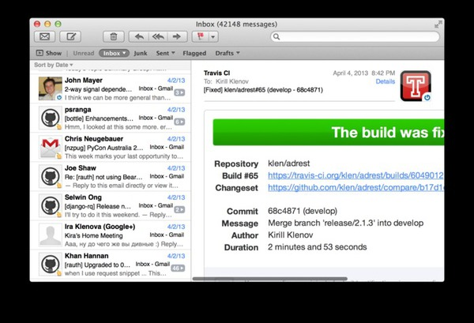

OSX - Программы которые я использую
Содержание:

Вот и настала моя очередь перейти на Mac. Уже некоторое время я использую Macbook Pro Retina и могу сказать, что доволен выбором на все 100%. Это именно его крышку вы можете наблюдать на картинке сверху.
Долгое время меня удерживали от перехода на технику Apple трудности установки и настройки серверного окружения для разработки. Я использовал debian системы и поднимал на своем рабочем ноутбуке такую же среду, что и на сервере. Kонечно, если постараться, многое можно настроить используя OSX. Но далеко не все так же просто. Потом я стал плотно работать с виртуализацией и гостевая система стала не такой критичной. Возможно я напишу об этом в следующих статьях, но в этой мне захотелось описать используемое мной программное обеспечение.
И так мой «must have» лист. Все программы и плагины представленные ниже, бесплатны на момент написания этого текста.
Джентльменский набор
Программное обеспечение которое в описании не нуждается: Skype, Chrome, Dropbox.
Ну и для OSX включу сюда же Adium и Homebrew (для разработчиков).
XtraFinder

После использования nautilus мне не хватало нескольких вещей в стандартном файловом менеджере OSX — Finder. В основном это касалось панельного режима.
Проблему решил бесплатный плагин Xtrafinder. Вкладки, панели, удобные кнопки, быстрое переключение отображения скрытых файлов и многое другое. Платные аналоги стоят до $50 и уступают в функциональности.
Xee

Не смог я привыкнуть к стандартному Preview для просмотра картинок. Нет опции запоминания увеличения, достаточно спорное решение с листанием. OpenSource просмотрщик Xee пришелся по душе гораздо больше.
VLC

Удобный кроссплатформенный медиа-плеер. Практически комбайн, хотя я использую его исключительно для просмотра видео. Стандартный Quicktime не соперник для VLC.
Transmission

Торрент-качалка. Возможно и не лучший выбор, но опять же присутствует на всех платформах, что избавляет от модальности при переключении на другие OS.
Интерфейс Transmission не перегружен и оставляет приятное впечатление.
AppTrap

В 2013 году при удалении программ на OSX стандартными инструментами, в системе остаются неиспользуемые служебные файлы, обнаружить и очистить которые — задача нетривиальная. Apptrap — бесплатное решение для надежного удаления программ.
Deegres

Бесплатный виджет для меню-бара отображающий текущую погоду. В том или ином виде использую подобные решения на всех платформах. Deegres можно найти в AppStore.
iTerm2

Использую iTerm2 вместо стандартного терминала OSX. Вкладки, темы, полезные хоткеи, удобная работа с клипбордом, панельный режим.
Считаю его удобнее чем TotalTerminal.
Face2Face
Mail — стандартное приложение электронной почты в OSX. Для него существует немалое количество плагинов.
Face2Face ищет изображения отправителей писем используя такие сервисы как Gravatar, Facebook и прочие.
Заключение
Надеюсь вы нашли для себя что-нибудь полезное в этом списке.
PS: Разумеется здесь упомянуты не все используемые мной программы. Например я предпочитаю Picasa стандартному iPhoto. Из платных программ выделил бы: 1Password, CleanMyMac, Bookreader.
В заключении хочу спросить пользователей OSX: часто ли и в каких целях вы используете Dashboard? Все мои знакомые в лучшем случае держат там погоду и калькулятор, и практически не открывают его. После пары недель использования я осознал его бесполезность и полностью удалил из системы:
defaults write com.apple.dashboard mcx-disabled -boolean true killall Dock defaults write com.apple.dashboard mcx-disabled -boolean false